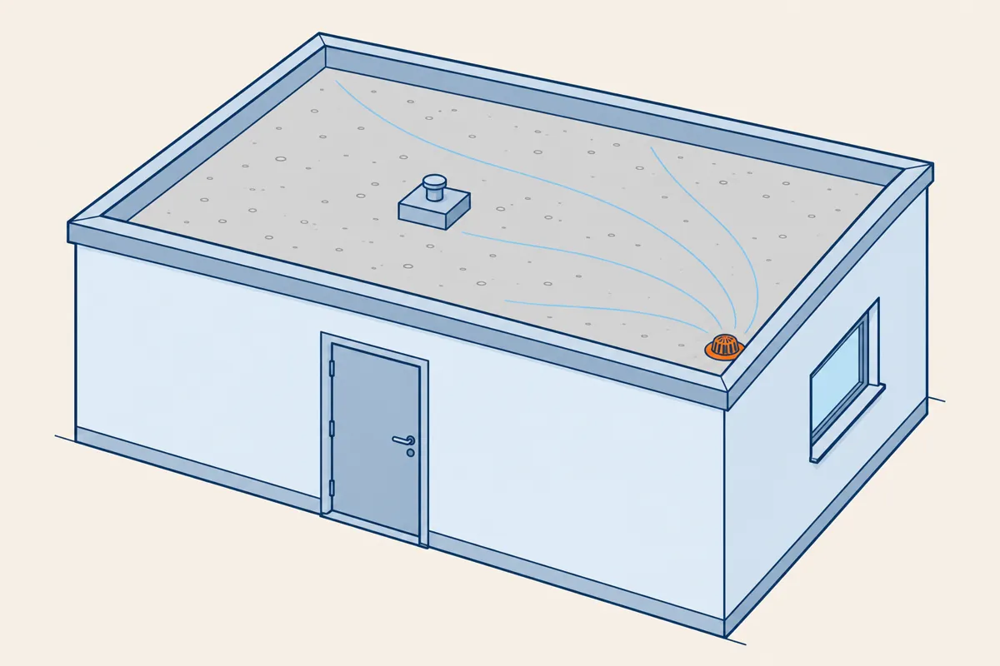

⬅ La ligne Lire les plans · Étanchéité des toitures · terminus

Vous avez traversé la ligne avec le même bâtiment : le vestiaire de la gare 10. Le terminus vous donne le dossier complet de son toit, à l'indice B. Vous le traitez seul, en 45 minutes.
Environ 1 h 30, test compris. À la fin, vous saurez :
Comment travailler. Lisez les écrans 2 à 10 : chaque geste a sa méthode et un exemple résolu sur le toit d'un local technique. Faites ensuite seul l'exercice sur le toit du vestiaire : la table « Où trouver la réponse » dit l'écran à relire pour chaque question. La leçon existe aussi sur papier, avec les mêmes numéros d'écran (bouton « Leçon (PDF) » en haut de la gare).
Le dossier contient un plan de toiture, un descriptif et une coupe. Chaque question reprend un geste d'une gare déjà traversée. Avant la première question, cochez la liste de contrôle d'entrée :
Les exemples résolus des écrans 4 à 9 portent sur le toit d'un local technique, à l'indice C.
Légende de l'exemple. Costière : 800 × 800 mm. Acrotère : épaisseur 200 mm. C-C : trait de coupe. Niveaux en m, dessus de la forme de pente.
Descriptif de l'exemple. Indice C : la costière est agrandie, 800 × 800 au lieu de 600 × 600. Isolant : 120 mm. Protection en gravillon : 40 mm. Pare-vapeur et membrane : épaisseurs négligées. Membrane en 2 couches, partie courante et relevés, + 10 % par couche, rouleaux de 8 m². Relevé : au moins 150 mm au-dessus de la protection, hauteur développée 0,40 m. Le dossier contient aussi la coupe C-C, sur l'acrotère gauche, et le détail de l'EP.
| Temps | Ce que vous faites |
|---|---|
| 10 min | lecture complète du dossier, liste de contrôle d'entrée au brouillon |
| 25 min | les questions dans l'ordre, calculs écrits en entier |
| 5 min | vérification : unités, pentes et niveaux, aucune case vide |
| 5 min | réserve : la question qui a résisté |
Une question bloque plus de 5 minutes : notez un repère, passez à la suivante et revenez-y pendant la réserve.
Écrivez chaque calcul en entier : les valeurs, l'opération, le résultat et l'unité. Gardez les décimales jusqu'au résultat final.
L'indice de révision, dans le cartouche, dit la version du plan. Travaillez toujours sur le dernier indice (gare 3).
Le cartouche porte « ind. C ». Le descriptif dit : la costière est agrandie, 800 × 800 au lieu de 600 × 600.
Réponse : la costière passe à 800 × 800 ; je le vois dans le descriptif et sur le plan, au centre de la toiture.
Une distance sans cote se mesure à la règle sur le plan papier. L'échelle la convertit ensuite en vraie grandeur (gare 6).
Sur le plan papier au 1/50, la règle donne 18 mm entre la face intérieure de l'acrotère du bas et l'axe du trop-plein.
Cote réelle : 18 × 50 = 900 mm, soit 0,90 m.
Mesurez sur le plan du dossier, imprimé à 100 %. Vérifiez d'abord une cote connue : au 1/50, la cote 5000 mesure 100 mm. Le dessin de cette leçon est réduit : il ne se mesure pas.
Sur une pente, le niveau change avec la distance. À 2 %, l'eau descend de 2 cm par mètre (Toiture 1).
Le coin intérieur bas droit, près de l'EP, est coté + 4,03. Le trop-plein est sur le même côté, 0,90 m plus haut dans la pente (écran 5).
Différence : 0,90 × 0,02 = 0,018 m. Niveau : 4,03 + 0,018 = + 4,048.
Contrôle du plan : 4,10 − 4,03 = 0,07 m, et 3,50 × 0,02 = 0,07 m. Les niveaux s'accordent.
Un niveau plus l'épaisseur de la couche posée dessus donne le niveau suivant (Toiture 2). Les épaisseurs se passent en mètres : 120 mm = 0,12 m.
Forme de pente : + 4,048 (écran 6). Dessus de l'isolant : 4,048 + 0,12 = 4,168.
Dessus de la protection : 4,168 + 0,04 = + 4,208. Haut minimal du relevé : 4,208 + 0,15 = + 4,358.
Chaque point singulier du plan a besoin de son détail : relevés, EP, trop-pleins, costières, JD (Toiture 3).
Points du plan : les relevés sur les acrotères, l'EP, le trop-plein, la costière. Détails fournis : la coupe C-C, qui montre le relevé sur l'acrotère, et le détail de l'EP.
Réponse : le trop-plein et la costière n'ont pas de détail. Je demande ces deux détails.
Quand le descriptif met la même membrane en partie courante et en relevés, les deux surfaces s'additionnent (Toiture 5).
Partie courante : 5,00 × 3,50 − 0,80 × 0,80 = 17,50 − 0,64 = 16,86 m².
Relevés : 2 × (5,00 + 3,50) + 4 × 0,80 = 20,20 m, puis 20,20 × 0,40 = 8,08 m².
Une couche : (16,86 + 8,08) × 1,10 = 24,94 × 1,10 = 27,434 m². Deux couches : 27,434 × 2 = 54,868 m².
Rouleaux : 54,868 ÷ 8 = 6,8585. On commande 7 rouleaux.
Le dossier se traite toujours dans le même ordre. Gardez cet écran sous les yeux pendant l'exercice.
| Étape | Geste | Écran |
|---|---|---|
| 1 | Lire le dossier, liste de contrôle, temps | 2 et 3 |
| 2 | Ce que change l'indice, et où | 4 |
| 3 | Mesurer sur le plan, puis × 50 | 5 |
| 4 | Niveau de la forme de pente au point | 6 |
| 5 | Niveau de la protection, haut du relevé | 7 |
| 6 | Points singuliers sans détail | 8 |
| 7 | Rouleaux : partie courante et relevés | 9 |
L'auto-bilan, à la fin de l'exercice, donne pour chaque question la gare à retravailler. Une case vide : relisez l'écran de cette leçon, puis cette gare.
Le dernier test de la ligne porte sur la méthode.
Le dossier, les plans, les conventions, les échelles, les cotes, le métré, le croquis, la maquette, et la toiture-terrasse au bout : vous avez traversé la ligne.
Télécharger la leçon papier (PDF) Télécharger le dossier du terminus (PDF)
Pour l'enseignant, le corrigé est dans l'espace enseignant, sous code. D'autres dossiers d'entraînement y sont rangés, sous le même code.